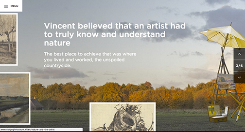

ALL ESSENTIALS
I love clean; and this website is a perfect example of it. It also doesn't hurt that I love the branding, and the images, and that everything being displayed all coordinates so well. The only downfall is that it is sometimes slow to load. But the loading icon is so cute, you don't really care! Also, when you click on an item, that item shows up in the loading icon. OH GEEZE THAT'S ADORABLE.
VAN GOGH MUSEM
This website is just so fun! It reminds me of this interactive google doodle that was made for Nelson Mandela's 96th birthday. I especially like the 3rd page/slide where the letter glides onto screen. Everyone likes something that is a little interactive, and a museum website it perfect for that.
D.FY
Oh man am I a sucker for those home pages with the big images that looks like images at first, but WAIT, that's a video! Woah! Neat! Yay! I've seen lots of websites attempt this, and it either loads too slowly, or doesn't quite have the effect you want. So this website seriously pleases that weird spot in my heart only nice websites can please.